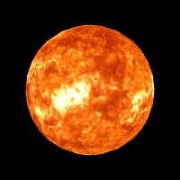
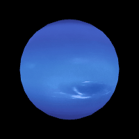

Sunce
Prečnik: 1.392.000 km
Masa: 1.989 × 10³⁰ kg
Temperatura: 5.778 K (površina)
Starost: 4.6 milijardi godina
Tip: Žuta patuljasta zvezda
Sunce je zvezda u centru našeg sunčevog sistema. Sadrži 99.86% mase
celog sunčevog sistema i generiše energiju preko nuklearne fuzije.

Merkur
Prečnik: 4.879 km
Masa: 3.30 × 10²³ kg
Udaljenost od Sunca: 57.9 miliona km
Godina: 88 zemaljskih dana
Dan: 59 zemaljskih dana
Merkur je najblиža planeta Suncu i najmanja u sunčevom sistemu.
Temperatura varira od 173°C noću do 427°C danju. Nema atmosferu niti
satelite.

Venera
Prečnik: 12.104 km
Masa: 4.87 × 10²⁴ kg
Udaljenost od Sunca: 108.2 miliona km
Godina: 225 zemaljskih dana
Dan: 243 zemalska dana
Venera je najvrелija planeta u sunčevom sistemu zbog ekstremnog
staklenog efekta. Poznata je kao "Jutarnja" ili "Večernja zvezda".
Atmosfera je 96% ugljendioksid.

Zemlja
Prečnik: 12.742 km
Masa: 5.97 × 10²⁴ kg
Udaljenost od Sunca: 149.6 miliona km
Godina: 365.25 dana
Dan: 24 sata
Zemlja je jedina poznata planeta na kojoj postoji život. 71%
površine pokriva voda, a atmosfera sadrži 21% kiseonika. Zemlja ima
jedan prirodni satelit Mesec.

Mars
Prečnik: 6.779 km
Masa: 6.39 × 10²³ kg
Udaljenost od Sunca: 227.9 miliona km
Godina: 687 zemaljskih dana
Dan: 24.6 sati
Mars je poznata kao "Crvena planeta" zbog gvožđe oksida na površini.
Ima najveći vulkan u sunčevom sistemu Olimp Mons, visok 21 km.

Jupiter
Prečnik: 139.820 km
Masa: 1.90 × 10²⁷ kg
Udaljenost od Sunca: 778.5 miliona km
Godina: 12 zemaljskih godina
Dan: 9.9 sati
Jupiter je najveća planeta u sunčevom sistemu. Poznata je po Velikoj
crvenoj pegi olujи koja traje vekovima. Ima više od 80 satelita,
uključujući Io, Europu, Ganimed i Kalisto.

Saturn
Prečnik: 116.460 km
Masa: 5.68 × 10²⁶ kg
Udaljenost od Sunca: 1.43 milijarde km
Godina: 29 zemaljskih godina
Dan: 10.7 sati
Saturn je poznат po spektakularnim prstenovima od leda i stena.
Druga je najveća planeta i ima najнижu gustinu mogla bi da pliva u
vodi. Ima više od 80 satelita.

Uran
Prečnik: 50.724 km
Masa: 8.68 × 10²⁵ kg
Udaljenost od Sunca: 2.87 milijarde km
Godina: 84 zemalske godine
Dan: 17.2 sata
Uran je ledena džinova sa jedinstvenom rotacijom okreće se "na boku"
pod uglom od 98°. Ima slabe prstenove i 27 poznatih satelita.
Atmosfera sadrži vodonik, helijum i metan.

Neptun
Prečnik: 49.244 km
Masa: 1.024 × 10²⁶ kg
Udaljenost od Sunca: 4.5 milijarde km
Godina: 165 zemaljskih godina
Dan: 16.1 sati
Neptun je najudaljenija planeta od Sunca. Ima najjače vetrove u
sunčevom sistemu, koji dostižu brzinu od 2.100 km/h. Otkrivena je
matematički pre nego što je viđena.

Pluton
Prečnik: 2.376 km
Masa: 1.31 × 10²² kg
Udaljenost od Sunca: 5.9 milijarde km
Godina: 248 zemaljskih godina
Dan: 6.4 zemalских dana
Pluton je patuljasta planeta u Kajperovom pojasu. Do 2006. smatrana
je devetom planetom. Ima pet satelita, najveći je Haron. Temperatura
je oko 230°C.
.jpg)
Tatooine
Klima: Pustinjska, ekstremno suva
Broj sunca: 2 (Tatoo I i Tatoo II)
Stanovnici: Ljudi, Tusken Raideri, Jawa
Važnost: Rodna planeta Anakina i Lukea Skywalkera
Tatooine je pustinjaska planeta iz Star Wars univerzuma.
Poznata je po svojim dvostrukim suncima, siromašnim uslovima za
život, i značajnoj ulozi u životima Skywalker porodice. Gradovi
poput Mos Eisleyja i Mos Espae čine je centrom trgovine i
krijumčarenja.

Arrakis
Klima: Pustinjska, bez stalnih površinskih voda
Resurs: Jedini izvor začina (melange)
Stanovnici: Fremeni, kolonisti Imperijuma
Važnost: Ključna planeta galaktičke politike
Arrakis, poznata i kao Dune, je pustinjska planeta iz
univerzuma Frenka Herberta. Ogromne peščane dine kriju džinovske
peščane crve, dok Fremeni razvijaju jedinstvenu kulturu
preživljavanja. Začin melange, najvredniji resurs u svemiru, čini
Arrakis centrom ekonomske i političke moći.